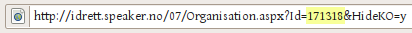
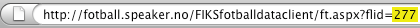

Speakercal
Speakercal lar deg omforme en terminliste på speaker.no til en dynamisk oppdatert iCal-fil, som kan importeres i Microsoft Outlook eller abonneres på (med oppdaterte resultater!) i Apples iCalendar, Novells Evolution, Google Calendar eller lignende programmer og tjenester.
Slik gjør du
-
Finn ID-nummeret for ditt lag
For å kunne laste ned terminlista, må Speakercal få vite ID-nummeret til ditt lag. ID-nummeret finner du ved å søke opp ditt lag på speaker.no, klikke deg inn på lagets oversiktsside og se i adresselinjen. Der står det (blant annet) id=xxxxxx. Tallet x er ditt lags id-nummer.

For fotball er det fra og med sesongen 2008/2009 en annen adresse og ID-nummer.

-
Skriv inn ID-nummeret her
Skriv inn nummeret i boksen under, og trykk deretter på [TAB]:
Kopier og lim inn adressen:
Adressen kommer her når du har tastet inn ID-nummeret.
Virker det ikke?
Du må ha Javascript skrudd på i nettleseren din for få opp adressen automatisk. Ellers kan du prøve å bare skrive inn adressen http://speakercal.trylle.no/calendar/matches/[id].ics direkte, der [id] byttes ut med id-nummeret du har funnet.
Kalenderfilene oppdateres en gang i døgnet, for å spare både speaker.no og meg for litt båndbredde.